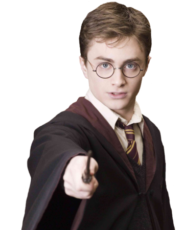

Harry James Potter (ur. 31 lipca 1980 r.) — czarodziej półkrwi, jedyne dziecko Jamesa i Lily Potterów. Najbardziej znany czarodziej XX w.
Swoją sławę „zawdzięcza” proroctwu wypowiedzianemu na początku 1980 roku przez Sybillę Trelawney dotyczącą Lorda Voldemorta i chłopca urodzonego pod koniec siódmego miesiąca. W tym okresie urodziło się dwóch chłopców, jednakże, to właśnie Harry został wybrany jako równy Czarnemu Panu.
W październiku 1981 roku Lord Voldemort zabił rodziców Harry’ego ukrywających się przy pomocy zaklęcia Fideliusa w Dolinie Godryka, pragnących za wszelką cenę uchronić swoje, zaledwie roczne i jedyne dziecko. Wydał ich Peter Pettigrew, który nawet nie chciał myśleć by zginąć za swojego przyjaciela i jego żonę. Ta wczesna próba usunięcia przeszkody na drodze do panowania nad światem czarodziejów nie powiodła się i doprowadziła do końca Pierwszej Wojny Czarodziejów, co było równoznaczne z upadkiem Czarnego Pana. Od tej chwili cały świat, znał Harry’ego jako „Chłopca, który przeżył”, czyli jedyną osobę, która do tej pory przeżyła mordercze zaklęcie.
Jedną z konsekwencji poświęcenia swojego życia przez Lily w imię miłości do dziecka było zmuszenie Harry’ego do zamieszkania z jego jedynymi żyjącymi krewnymi – rodziną Dursley. Była to rodzina mugoli, wśród której miał żyć, aż do ukończenia siedemnastego roku życia, dopóki magia jego matki sprawowała nad nim pieczę.
W dniu jedenastych urodzin dowiedział się prawdy na temat swojego pochodzenia oraz tego kim tak naprawdę jest od wysłanego na polecenie Dumbledore’a, półolbrzyma oraz gajowego w Szkole Magii i Czarodziejstwa w Hogwarcie. Pierwszego września 1991 roku został przydzielony do Gryffindoru. W czasie nauki szkolnej zaprzyjaźnił się z dwójką innych Gryfonów – Hermioną Granger i Ronem Weasleyem oraz został najmłodszym szukającym w swoim stuleciu.
Swoją sławę w czarodziejskim świecie pogłębił dzięki ochronie Kamienia Filozoficznego przed pragnącym odrodzenia Lordem Voldemortem oraz uratowaniu życia młodszej siostry Rona, Ginny w czasie swojego drugiego roku nauki i zabiciu bazyliszka. Dodatkowo podkreślił swoje niezwykłe umiejętności magiczne potrafiąc wyczarować cielesnego Patronusa w wieku lat trzynastu. W czasie czwartego roku zwyciężył w Turnieju Trójmagicznym, chociaż zwycięstwo to zostało okupione śmiercią kolegi ze szkoły – Cedrika Diggory i powrotem Lorda Voldemorta oraz w dużej mierze wspomógł go w tym udający Szalonookiego Barty Crouch Jr. Musiał walczyć z głosami sprzeciwu ze strony Ministerstwa Magii, które nie wierzyło w powrót Czarnego Pana, nazywając go kłamcą. W kolejnym roku walczył w Departamencie Tajemnic oraz widział śmierć, niedawno poznanego ojca chrzestnego, Syriusza Blacka.
Harry odegrał znaczącą rolę w wielu innych bitwach Drugiej Wojny Czarodziejów, a także był odpowiedzialny za odszukanie i zniszczenie horkruksów Lorda Voldemorta. W czasie bitwy o Hogwart był świadkiem śmierci wielu bliskich mu osób. Stanął jak równy z równym w obliczu śmierci wiedząc, że to jedyny sposób na przybliżenie się do pokonania Czarnego Pana. W limbie spotkał Albusa Dumbledore’a, który jak zawsze wsparł go mądrą radą i pomógł dokonać wyboru. Wrócił do „świata żywych” i raz na zawsze pokonał Toma Marvolo Riddle’a.
Harry Potter był również jedynym znanym Panem Śmierci, który posiadał jednocześnie trzy Insygnia Śmierci.
Po wojnie Harry został aurorem i pomagał w zreformowaniu Ministerstwa Magii u boku nowego Ministra – Kingsleya.
W pewnym momencie swojego życia poślubił Ginny Weasley, z którą miał trójkę dzieci: dwóch synów i córkę. Został wybrany na ojca chrzestnego jedynego dziecka zmarłych Nimfadory i Remusa Lupin – Teda Remusa Lupina.
W 2007 roku Harry został awansowany na szefa Biura Aurorów w wieku 26 lat, co stanowiło rekord. Następnie rozpoczął pracę w Departamencie Przestrzegania Prawa Czarodziejów, a w 2019 roku został jego szefem.